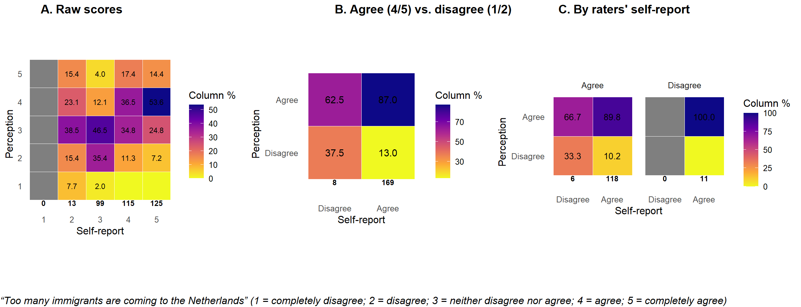

Getting started
To copy the code, click the button in the upper right corner of the
code-chunks.
clean up
rm(list = ls())
gc()
general custom functions
fpackage.check: Check if packages are installed (and
install if not) in Rfsave: Function to save data with time stamp in correct
directoryfload: Function to load R-objects under new namesfshowdf: Print objects (tibble /
data.frame) nicely on screen in .Rmd
fpackage.check <- function(packages) {
lapply(packages, FUN = function(x) {
if (!require(x, character.only = TRUE)) {
install.packages(x, dependencies = TRUE)
library(x, character.only = TRUE)
}
})
}
fsave <- function(x, location = "./data/processed/") {
if (location == "./data/processed/") {
ifelse(!dir.exists("data"), dir.create("data"), FALSE)
ifelse(!dir.exists("data/processed"), dir.create("data/processed"), FALSE)
}
object = deparse(substitute(x))
datename <- substr(gsub("[:-]", "", Sys.time()), 1, 8)
totalname <- paste(location, object, "_", datename, ".rda", sep = "")
assign(eval(object), x, envir = .GlobalEnv)
print(paste("SAVED: ", totalname, sep = ""))
save(list = object, file = totalname)
}
fload <- function(fileName) {
load(fileName)
get(ls()[ls() != "fileName"])
}
fshowdf <- function(x, caption = NULL, digits = 2, footnote = NULL, ...) {
knitr::kable(x, digits = digits, "html", caption = caption, ...) %>%
kableExtra::footnote(general = footnote) %>%
kableExtra::kable_styling(bootstrap_options = c("striped", "hover")) %>%
kableExtra::scroll_box(width = "100%", height = "300px")
}
necessary packages
packages = c("tidyverse", "dplyr", "ggplot2", "scales", "purrr", "ggpubr")
fpackage.check(packages)
rm(packages)
confusion matrix
“Too many immigrants are coming to the Netherlands”
(1 = completely disagree; 2 = disagree; 3 = neither disagree, nor
agree; 4 = agree; 5 = completely agree)
# all pairwise perceptions, pooled across classes
perceptions <- purrr::map2_dfr(class_data, names(class_data), function(class_obj, class_name) {
truth <- class_obj$truth
percep <- class_obj$perception
df <- as.data.frame(as.table(percep)) %>%
rename(Perceiver = Var1, Target = Var2, Perceived = Freq) %>%
filter(!is.na(Perceived)) %>%
mutate(Truth = truth[Target] |>
unname(), Perceiver_self = truth[Perceiver] |>
unname())
return(df)
})
# raw confusion matrix
confusion_df <- perceptions %>%
filter(!is.na(Perceived), !is.na(Truth), Perceived %in% 1:5, Truth %in% 1:5) %>%
count(Perceived, Truth, name = "Freq") %>%
complete(Perceived = 1:5, Truth = 1:5, fill = list(Freq = 0)) %>%
group_by(Truth) %>%
mutate(Percent = 100 * Freq/sum(Freq)) %>%
ungroup() %>%
mutate(Perceived = factor(Perceived, levels = 1:5), Truth = factor(Truth, levels = 1:5))
# column counts
col_counts1 <- confusion_df %>%
group_by(Truth) %>%
summarise(Total_count = sum(Freq), .groups = "drop")
p1 <- ggplot(confusion_df, aes(x = Truth, y = Perceived, fill = Percent)) + geom_tile(color = "white",
linewidth = 0.2) + geom_text(aes(label = ifelse(Percent >= 1, number(Percent, 0.1), "")), size = 3) +
geom_text(data = col_counts1, aes(x = Truth, y = 0.5, label = Total_count), inherit.aes = FALSE,
vjust = 1, fontface = "bold", size = 3) + scale_fill_viridis_c(option = "plasma", direction = -1,
name = "Column %") + labs(x = "Self-report", y = "Perception") + coord_equal() + expand_limits(y = 0.1) +
theme_minimal(base_size = 12) + theme(panel.grid = element_blank())
# aggregated into disagree (1/2) and agree (3/4)
perceptions_binned <- perceptions %>%
filter(!is.na(Perceived), !is.na(Truth), Perceived %in% 1:5, Truth %in% 1:5) %>%
mutate(Truth_bin = case_when(Truth %in% 1:2 ~ "Disagree", Truth %in% 4:5 ~ "Agree"), Perceived_bin = case_when(Perceived %in%
1:2 ~ "Disagree", Perceived %in% 4:5 ~ "Agree")) %>%
filter(!is.na(Truth_bin), !is.na(Perceived_bin)) %>%
mutate(Perceived_bin = factor(Perceived_bin, levels = c("Disagree", "Agree")), Truth_bin = factor(Truth_bin,
levels = c("Disagree", "Agree")))
confusion_binned <- perceptions_binned %>%
count(Perceived_bin, Truth_bin, name = "Freq") %>%
complete(Perceived_bin = c("Disagree", "Agree"), Truth_bin = c("Disagree", "Agree"), fill = list(Freq = 0)) %>%
group_by(Truth_bin) %>%
mutate(Percent = 100 * Freq/sum(Freq)) %>%
ungroup()
col_counts2 <- confusion_binned %>%
group_by(Truth_bin) %>%
summarise(Total_count = sum(Freq), .groups = "drop")
p2 <- ggplot(confusion_binned, aes(x = Truth_bin, y = Perceived_bin, fill = Percent)) + geom_tile(color = "white",
linewidth = 0.2) + geom_text(aes(label = ifelse(Percent >= 1, number(Percent, 0.1), "")), size = 4) +
geom_text(data = col_counts2, aes(x = Truth_bin, y = 0.5, label = Total_count), inherit.aes = FALSE,
vjust = 1, fontface = "bold", size = 3) + scale_fill_viridis_c(option = "plasma", direction = -1,
name = "Column %") + scale_x_discrete(limits = c("Disagree", "Agree")) + scale_y_discrete(limits = c("Disagree",
"Agree")) + labs(x = "Self-report", y = "Perception") + coord_equal() + expand_limits(y = 0.1) +
theme_minimal(base_size = 12) + theme(panel.grid = element_blank())
# disaggregated by the rater's self-report
perceptions_binned_facet <- perceptions %>%
filter(!is.na(Perceived), !is.na(Truth), Perceived %in% 1:5, Truth %in% 1:5) %>%
mutate(Truth_bin = case_when(Truth %in% 1:2 ~ "Disagree", Truth %in% 4:5 ~ "Agree"), Perceived_bin = case_when(Perceived %in%
1:2 ~ "Disagree", Perceived %in% 4:5 ~ "Agree"), Self_bin = case_when(Perceiver_self %in% 1:2 ~
"Disagree", Perceiver_self %in% 4:5 ~ "Agree")) %>%
filter(!is.na(Truth_bin), !is.na(Perceived_bin), !is.na(Self_bin)) %>%
mutate(Perceived_bin = factor(Perceived_bin, levels = c("Disagree", "Agree")), Truth_bin = factor(Truth_bin,
levels = c("Disagree", "Agree")), Self_bin = factor(Self_bin, levels = c("Disagree", "Agree")))
confusion_binned_facet <- perceptions_binned_facet %>%
count(Perceived_bin, Truth_bin, Self_bin, name = "Freq") %>%
complete(Perceived_bin = c("Disagree", "Agree"), Truth_bin = c("Disagree", "Agree"), Self_bin = c("Disagree",
"Agree"), fill = list(Freq = 0)) %>%
group_by(Truth_bin, Self_bin) %>%
mutate(Percent = 100 * Freq/sum(Freq)) %>%
ungroup()
col_counts3 <- confusion_binned_facet %>%
group_by(Truth_bin, Self_bin) %>%
summarise(Total_count = sum(Freq), .groups = "drop")
p3 <- ggplot(confusion_binned_facet, aes(x = Truth_bin, y = Perceived_bin, fill = Percent)) + geom_tile(color = "white",
linewidth = 0.2) + geom_text(aes(label = ifelse(Percent >= 1, number(Percent, 0.1), "")), size = 3.5) +
geom_text(data = col_counts3, aes(x = Truth_bin, y = 0.5, label = Total_count), inherit.aes = FALSE,
vjust = 1, fontface = "bold", size = 3) + scale_fill_viridis_c(option = "plasma", direction = -1,
name = "Column %") + scale_x_discrete(limits = c("Disagree", "Agree")) + scale_y_discrete(limits = c("Disagree",
"Agree")) + labs(x = "Self-report", y = "Perception") + coord_equal() + expand_limits(y = 0.1) +
facet_wrap(~Self_bin, nrow = 1) + theme_minimal(base_size = 12) + theme(panel.grid = element_blank())
# combine
combi <- ggarrange(p1, p2, p3, ncol = 3, nrow = 1, widths = c(1, 1, 1.25), labels = c("A. Raw scores",
"B. Agree vs. disagree", "C. By raters' self-report"))
annotate_figure(combi, bottom = text_grob("“Too many immigrants are coming to the Netherlands” (1 = completely disagree; 2 = disagree; 3 = neither disagree nor agree; 4 = agree; 5 = completely agree)",
hjust = 0, x = 0, face = "italic", size = 12))

LS0tDQp0aXRsZTogIkRlc2NyaWJpbmcgaW5hY2N1cmFjeSBhbmQgYmlhcyINCmJpYmxpb2dyYXBoeTogcmVmZXJlbmNlcy5iaWINCmxpbmstY2l0YXRpb25zOiB0cnVlDQphdXRob3I6ICJSb2IgRnJhbmtlbiINCm91dHB1dDogDQogIGh0bWxfZG9jdW1lbnQ6DQogICAgY3NzOiB0d2Vha3MuY3NzDQogICAgdG9jOiAgdHJ1ZQ0KICAgIHRvY19mbG9hdDogdHJ1ZQ0KICAgIG51bWJlcl9zZWN0aW9uczogZmFsc2UNCiAgICB0b2NfZGVwdGg6IDENCiAgICBjb2RlX2ZvbGRpbmc6IHNob3cNCiAgICBjb2RlX2Rvd25sb2FkOiB5ZXMNCi0tLQ0KDQpgYGB7ciwgZ2xvYmFsc2V0dGluZ3MsIGVjaG89RkFMU0UsIHdhcm5pbmc9RkFMU0UsIHJlc3VsdHM9J2hpZGUnfQ0KbGlicmFyeShrbml0cikNCmtuaXRyOjpvcHRzX2NodW5rJHNldChlY2hvID0gVFJVRSkNCm9wdHNfY2h1bmskc2V0KHRpZHkub3B0cz1saXN0KHdpZHRoLmN1dG9mZj0xMDApLHRpZHk9VFJVRSwgd2FybmluZyA9IEZBTFNFLCBtZXNzYWdlID0gRkFMU0UsY29tbWVudCA9ICIjPiIsIGNhY2hlPVRSVUUsIGNsYXNzLnNvdXJjZT1jKCJ0ZXN0IiksIGNsYXNzLm91dHB1dD1jKCJ0ZXN0MyIpKQ0Kb3B0aW9ucyh3aWR0aCA9IDEwMCkNCnJnbDo6c2V0dXBLbml0cigpDQoNCmBgYA0KDQoNCmBgYHtyIGtsaXBweSwgZWNobz1GQUxTRSwgaW5jbHVkZT1UUlVFfQ0Ka2xpcHB5OjprbGlwcHkocG9zaXRpb24gPSBjKCd0b3AnLCAncmlnaHQnKSkNCiNrbGlwcHk6OmtsaXBweShjb2xvciA9ICdkYXJrcmVkJykNCiNrbGlwcHk6OmtsaXBweSh0b29sdGlwX21lc3NhZ2UgPSAnQ2xpY2sgdG8gY29weScsIHRvb2x0aXBfc3VjY2VzcyA9ICdEb25lJykNCmBgYA0KDQpMYXN0IGNvbXBpbGVkIG9uIGByIGZvcm1hdChTeXMudGltZSgpLCAnJWQtJW0tJVknKWANCg0KLS0tICANCg0KIyBHZXR0aW5nIHN0YXJ0ZWQNCg0KVG8gY29weSB0aGUgY29kZSwgY2xpY2sgdGhlIGJ1dHRvbiBpbiB0aGUgdXBwZXIgcmlnaHQgY29ybmVyIG9mIHRoZSBjb2RlLWNodW5rcy4NCg0KIyMgY2xlYW4gdXANCg0KYGBge3IsIHJlc3VsdHM9J2hpZGUnfQ0Kcm0obGlzdD1scygpKQ0KZ2MoKQ0KYGBgDQoNCg0KPGJyPg0KDQojIyBnZW5lcmFsIGN1c3RvbSBmdW5jdGlvbnMNCg0KLSBgZnBhY2thZ2UuY2hlY2tgOiBDaGVjayBpZiBwYWNrYWdlcyBhcmUgaW5zdGFsbGVkIChhbmQgaW5zdGFsbCBpZiBub3QpIGluIFINCi0gYGZzYXZlYDogRnVuY3Rpb24gdG8gc2F2ZSBkYXRhIHdpdGggdGltZSBzdGFtcCBpbiBjb3JyZWN0IGRpcmVjdG9yeQ0KLSBgZmxvYWRgOiBGdW5jdGlvbiB0byBsb2FkIFItb2JqZWN0cyB1bmRlciBuZXcgbmFtZXMNCi0gYGZzaG93ZGZgOiBQcmludCBvYmplY3RzIChgdGliYmxlYCAvIGBkYXRhLmZyYW1lYCkgbmljZWx5IG9uIHNjcmVlbiBpbiBgLlJtZGANCg0KYGBge3IsIGZ1bn0NCmZwYWNrYWdlLmNoZWNrIDwtIGZ1bmN0aW9uKHBhY2thZ2VzKSB7DQogICAgbGFwcGx5KHBhY2thZ2VzLCBGVU4gPSBmdW5jdGlvbih4KSB7DQogICAgICAgIGlmICghcmVxdWlyZSh4LCBjaGFyYWN0ZXIub25seSA9IFRSVUUpKSB7DQogICAgICAgICAgICBpbnN0YWxsLnBhY2thZ2VzKHgsIGRlcGVuZGVuY2llcyA9IFRSVUUpDQogICAgICAgICAgICBsaWJyYXJ5KHgsIGNoYXJhY3Rlci5vbmx5ID0gVFJVRSkNCiAgICAgICAgfQ0KICAgIH0pDQp9DQoNCmZzYXZlIDwtIGZ1bmN0aW9uKHgsIGxvY2F0aW9uID0gIi4vZGF0YS9wcm9jZXNzZWQvIikgew0KICBpZiAobG9jYXRpb24gPT0gIi4vZGF0YS9wcm9jZXNzZWQvIikgew0KICBpZmVsc2UoIWRpci5leGlzdHMoImRhdGEiKSwgZGlyLmNyZWF0ZSgiZGF0YSIpLCBGQUxTRSkNCiAgaWZlbHNlKCFkaXIuZXhpc3RzKCJkYXRhL3Byb2Nlc3NlZCIpLCBkaXIuY3JlYXRlKCJkYXRhL3Byb2Nlc3NlZCIpLCBGQUxTRSkNCiAgfQ0KDQogIG9iamVjdCA9IGRlcGFyc2Uoc3Vic3RpdHV0ZSh4KSkNCiAgZGF0ZW5hbWUgPC0gc3Vic3RyKGdzdWIoIls6LV0iLCAiIiwgU3lzLnRpbWUoKSksIDEsIDgpDQogIHRvdGFsbmFtZSA8LSBwYXN0ZShsb2NhdGlvbiwgb2JqZWN0LCAiXyIsIGRhdGVuYW1lLCAgIi5yZGEiLCBzZXAgPSAiIikNCiAgYXNzaWduKGV2YWwob2JqZWN0KSwgeCwgZW52aXIgPSAuR2xvYmFsRW52KQ0KICBwcmludChwYXN0ZSgiU0FWRUQ6ICIsIHRvdGFsbmFtZSwgc2VwID0gIiIpKQ0KICBzYXZlKGxpc3QgPSBvYmplY3QsIGZpbGUgPSB0b3RhbG5hbWUpICANCn0NCg0KZmxvYWQgIDwtIGZ1bmN0aW9uKGZpbGVOYW1lKXsNCiAgbG9hZChmaWxlTmFtZSkNCiAgZ2V0KGxzKClbbHMoKSAhPSAiZmlsZU5hbWUiXSkNCn0NCg0KZnNob3dkZiA8LSBmdW5jdGlvbih4LCBjYXB0aW9uID0gTlVMTCwgZGlnaXRzID0gMiwgZm9vdG5vdGUgPSBOVUxMLCAuLi4pIHsNCiAgICBrbml0cjo6a2FibGUoeCwgZGlnaXRzID0gZGlnaXRzLCAiaHRtbCIsIGNhcHRpb24gPSBjYXB0aW9uLCAuLi4pICU+JQ0KICAgICAgICBrYWJsZUV4dHJhOjpmb290bm90ZShnZW5lcmFsID0gZm9vdG5vdGUpICU+JQ0KICAgICAgICBrYWJsZUV4dHJhOjprYWJsZV9zdHlsaW5nKGJvb3RzdHJhcF9vcHRpb25zID0gYygic3RyaXBlZCIsICJob3ZlciIpKSAlPiUNCiAgICAgICAga2FibGVFeHRyYTo6c2Nyb2xsX2JveCh3aWR0aCA9ICIxMDAlIiwgaGVpZ2h0ID0gIjMwMHB4IikNCn0NCmBgYA0KDQo8YnI+DQoNCiMjIG5lY2Vzc2FyeSBwYWNrYWdlcw0KDQpgYGB7ciwgcGFja2FnZXMsIG1lc3NhZ2U9RkFMU0UsIHJlc3VsdHM9J2hpZGUnfQ0KcGFja2FnZXMgPSBjKCJ0aWR5dmVyc2UiLCAiZHBseXIiLCAiZ2dwbG90MiIsICJzY2FsZXMiLCAicHVycnIiLCAiZ2dwdWJyIikNCmZwYWNrYWdlLmNoZWNrKHBhY2thZ2VzKQ0Kcm0ocGFja2FnZXMpDQpgYGANCg0KDQo8YnI+DQoNCi0tLQ0KDQojIEltcG9ydA0KDQpJbXBvcnQgdGhlIHJlcGxpY2F0ZWQgZGF0YS1zZXQuYCANCg0KYGBge3IsIGRhdGF9DQojbGlzdC5maWxlcygiLi9kYXRhL3Byb2Nlc3NlZCIpDQp0b2RheSA8LSBnc3ViKCItIiwgIiIsIFN5cy5EYXRlKCkpDQp0b2RheSA8LSAiMjAyNTA5MDMiICNsYXRlc3QgdXBkYXRlZCBkYXRhc2V0DQpjbGFzc19kYXRhIDwtIGZsb2FkKHBhc3RlMCgiLi9kYXRhL3Byb2Nlc3NlZC8iLCB0b2RheSwgInppZWVsa2Fhcl9jbGFzc2RhdGEuUmRhIikpDQpgYGANCg0KLS0tDQoNCiMgY29uZnVzaW9uIG1hdHJpeA0KDQoiVG9vIG1hbnkgaW1taWdyYW50cyBhcmUgY29taW5nIHRvIHRoZSBOZXRoZXJsYW5kcyINCg0KKDEgPSBjb21wbGV0ZWx5IGRpc2FncmVlOyANCjIgPSBkaXNhZ3JlZTsNCjMgPSBuZWl0aGVyIGRpc2FncmVlLCBub3IgYWdyZWU7DQo0ID0gYWdyZWU7DQo1ID0gY29tcGxldGVseSBhZ3JlZSkNCg0KYGBge3IsIHdyYW5nbGUsIGZpZy53aWR0aD0xM30NCiNhbGwgcGFpcndpc2UgcGVyY2VwdGlvbnMsIHBvb2xlZCBhY3Jvc3MgY2xhc3Nlcw0KcGVyY2VwdGlvbnMgPC0gcHVycnI6Om1hcDJfZGZyKGNsYXNzX2RhdGEsIG5hbWVzKGNsYXNzX2RhdGEpLCBmdW5jdGlvbihjbGFzc19vYmosIGNsYXNzX25hbWUpIHsNCiAgdHJ1dGggPC0gY2xhc3Nfb2JqJHRydXRoDQogIHBlcmNlcCA8LSBjbGFzc19vYmokcGVyY2VwdGlvbg0KICANCiAgZGYgPC0gYXMuZGF0YS5mcmFtZShhcy50YWJsZShwZXJjZXApKSAlPiUNCiAgICByZW5hbWUoUGVyY2VpdmVyID0gVmFyMSwgVGFyZ2V0ID0gVmFyMiwgUGVyY2VpdmVkID0gRnJlcSkgJT4lDQogICAgZmlsdGVyKCFpcy5uYShQZXJjZWl2ZWQpKSAlPiUNCiAgICBtdXRhdGUoDQogICAgICBUcnV0aCA9IHRydXRoW1RhcmdldF0gfD4gdW5uYW1lKCksDQogICAgICBQZXJjZWl2ZXJfc2VsZiA9IHRydXRoW1BlcmNlaXZlcl0gfD4gdW5uYW1lKCkgDQogICAgKQ0KICByZXR1cm4oZGYpDQp9KQ0KDQojcmF3IGNvbmZ1c2lvbiBtYXRyaXgNCmNvbmZ1c2lvbl9kZiA8LSBwZXJjZXB0aW9ucyAlPiUNCiAgZmlsdGVyKCFpcy5uYShQZXJjZWl2ZWQpLCAhaXMubmEoVHJ1dGgpLCBQZXJjZWl2ZWQgJWluJSAxOjUsIFRydXRoICVpbiUgMTo1KSAlPiUNCiAgY291bnQoUGVyY2VpdmVkLCBUcnV0aCwgbmFtZSA9ICJGcmVxIikgJT4lDQogIGNvbXBsZXRlKA0KICAgIFBlcmNlaXZlZCA9IDE6NSwNCiAgICBUcnV0aCA9IDE6NSwNCiAgICBmaWxsID0gbGlzdChGcmVxID0gMCkNCiAgKSAlPiUNCiAgZ3JvdXBfYnkoVHJ1dGgpICU+JQ0KICBtdXRhdGUoUGVyY2VudCA9IDEwMCAqIEZyZXEgLyBzdW0oRnJlcSkpICU+JQ0KICB1bmdyb3VwKCkgJT4lDQogIG11dGF0ZSgNCiAgICBQZXJjZWl2ZWQgPSBmYWN0b3IoUGVyY2VpdmVkLCBsZXZlbHMgPSAxOjUpLA0KICAgIFRydXRoID0gZmFjdG9yKFRydXRoLCBsZXZlbHMgPSAxOjUpDQogICkNCg0KIyBjb2x1bW4gY291bnRzDQpjb2xfY291bnRzMSA8LSBjb25mdXNpb25fZGYgJT4lDQogIGdyb3VwX2J5KFRydXRoKSAlPiUNCiAgc3VtbWFyaXNlKFRvdGFsX2NvdW50ID0gc3VtKEZyZXEpLCAuZ3JvdXBzID0gImRyb3AiKQ0KDQpwMSA8LSBnZ3Bsb3QoY29uZnVzaW9uX2RmLCBhZXMoeCA9IFRydXRoLCB5ID0gUGVyY2VpdmVkLCBmaWxsID0gUGVyY2VudCkpICsNCiAgZ2VvbV90aWxlKGNvbG9yID0gIndoaXRlIiwgbGluZXdpZHRoID0gMC4yKSArDQogIGdlb21fdGV4dChhZXMobGFiZWwgPSBpZmVsc2UoUGVyY2VudCA+PSAxLCBudW1iZXIoUGVyY2VudCwgMC4xKSwgIiIpKSwgc2l6ZSA9IDMpICsNCiAgZ2VvbV90ZXh0KA0KICAgIGRhdGEgPSBjb2xfY291bnRzMSwNCiAgICBhZXMoeCA9IFRydXRoLCB5ID0gMC41LCBsYWJlbCA9IFRvdGFsX2NvdW50KSwNCiAgICBpbmhlcml0LmFlcyA9IEZBTFNFLA0KICAgIHZqdXN0ID0gMSwgZm9udGZhY2UgPSAiYm9sZCIsIHNpemUgPSAzDQogICkgKw0KICBzY2FsZV9maWxsX3ZpcmlkaXNfYyhvcHRpb24gPSAicGxhc21hIiwgZGlyZWN0aW9uID0gLTEsIG5hbWUgPSAiQ29sdW1uICUiKSArDQogIGxhYnMoeCA9ICJTZWxmLXJlcG9ydCIsIHkgPSAiUGVyY2VwdGlvbiIpICsNCiAgY29vcmRfZXF1YWwoKSArDQogIGV4cGFuZF9saW1pdHMoeSA9IDAuMSkgKw0KICB0aGVtZV9taW5pbWFsKGJhc2Vfc2l6ZSA9IDEyKSArDQogIHRoZW1lKHBhbmVsLmdyaWQgPSBlbGVtZW50X2JsYW5rKCkpDQoNCiNhZ2dyZWdhdGVkIGludG8gZGlzYWdyZWUgKDEvMikgYW5kIGFncmVlICgzLzQpDQpwZXJjZXB0aW9uc19iaW5uZWQgPC0gcGVyY2VwdGlvbnMgJT4lDQogIGZpbHRlcighaXMubmEoUGVyY2VpdmVkKSwgIWlzLm5hKFRydXRoKSwgUGVyY2VpdmVkICVpbiUgMTo1LCBUcnV0aCAlaW4lIDE6NSkgJT4lDQogIG11dGF0ZSgNCiAgICBUcnV0aF9iaW4gPSBjYXNlX3doZW4oDQogICAgICBUcnV0aCAlaW4lIDE6MiB+ICJEaXNhZ3JlZSIsDQogICAgICBUcnV0aCAlaW4lIDQ6NSB+ICJBZ3JlZSINCiAgICApLA0KICAgIFBlcmNlaXZlZF9iaW4gPSBjYXNlX3doZW4oDQogICAgICBQZXJjZWl2ZWQgJWluJSAxOjIgfiAiRGlzYWdyZWUiLA0KICAgICAgUGVyY2VpdmVkICVpbiUgNDo1IH4gIkFncmVlIg0KICAgICkNCiAgKSAlPiUNCiAgZmlsdGVyKCFpcy5uYShUcnV0aF9iaW4pLCAhaXMubmEoUGVyY2VpdmVkX2JpbikpICU+JQ0KICBtdXRhdGUoDQogICAgUGVyY2VpdmVkX2JpbiA9IGZhY3RvcihQZXJjZWl2ZWRfYmluLCBsZXZlbHMgPSBjKCJEaXNhZ3JlZSIsICJBZ3JlZSIpKSwNCiAgICBUcnV0aF9iaW4gPSBmYWN0b3IoVHJ1dGhfYmluLCBsZXZlbHMgPSBjKCJEaXNhZ3JlZSIsICJBZ3JlZSIpKQ0KICApDQoNCmNvbmZ1c2lvbl9iaW5uZWQgPC0gcGVyY2VwdGlvbnNfYmlubmVkICU+JQ0KICBjb3VudChQZXJjZWl2ZWRfYmluLCBUcnV0aF9iaW4sIG5hbWUgPSAiRnJlcSIpICU+JQ0KICBjb21wbGV0ZSgNCiAgICBQZXJjZWl2ZWRfYmluID0gYygiRGlzYWdyZWUiLCAiQWdyZWUiKSwNCiAgICBUcnV0aF9iaW4gPSBjKCJEaXNhZ3JlZSIsICJBZ3JlZSIpLA0KICAgIGZpbGwgPSBsaXN0KEZyZXEgPSAwKQ0KICApICU+JQ0KICBncm91cF9ieShUcnV0aF9iaW4pICU+JQ0KICBtdXRhdGUoUGVyY2VudCA9IDEwMCAqIEZyZXEgLyBzdW0oRnJlcSkpICU+JQ0KICB1bmdyb3VwKCkNCg0KY29sX2NvdW50czIgPC0gY29uZnVzaW9uX2Jpbm5lZCAlPiUNCiAgZ3JvdXBfYnkoVHJ1dGhfYmluKSAlPiUNCiAgc3VtbWFyaXNlKFRvdGFsX2NvdW50ID0gc3VtKEZyZXEpLCAuZ3JvdXBzID0gImRyb3AiKQ0KDQpwMiA8LSBnZ3Bsb3QoY29uZnVzaW9uX2Jpbm5lZCwgYWVzKHggPSBUcnV0aF9iaW4sIHkgPSBQZXJjZWl2ZWRfYmluLCBmaWxsID0gUGVyY2VudCkpICsNCiAgZ2VvbV90aWxlKGNvbG9yID0gIndoaXRlIiwgbGluZXdpZHRoID0gMC4yKSArDQogIGdlb21fdGV4dChhZXMobGFiZWwgPSBpZmVsc2UoUGVyY2VudCA+PSAxLCBudW1iZXIoUGVyY2VudCwgMC4xKSwgIiIpKSwgc2l6ZSA9IDQpICsNCiAgZ2VvbV90ZXh0KA0KICAgIGRhdGEgPSBjb2xfY291bnRzMiwNCiAgICBhZXMoeCA9IFRydXRoX2JpbiwgeSA9IDAuNSwgbGFiZWwgPSBUb3RhbF9jb3VudCksDQogICAgaW5oZXJpdC5hZXMgPSBGQUxTRSwNCiAgICB2anVzdCA9IDEsIGZvbnRmYWNlID0gImJvbGQiLCBzaXplID0gMw0KICApICsNCiAgc2NhbGVfZmlsbF92aXJpZGlzX2Mob3B0aW9uID0gInBsYXNtYSIsIGRpcmVjdGlvbiA9IC0xLCBuYW1lID0gIkNvbHVtbiAlIikgKw0KICBzY2FsZV94X2Rpc2NyZXRlKGxpbWl0cyA9IGMoIkRpc2FncmVlIiwgIkFncmVlIikpICsNCiAgc2NhbGVfeV9kaXNjcmV0ZShsaW1pdHMgPSBjKCJEaXNhZ3JlZSIsICJBZ3JlZSIpKSArDQogIGxhYnMoeCA9ICJTZWxmLXJlcG9ydCIsIHkgPSAiUGVyY2VwdGlvbiIpICsNCiAgY29vcmRfZXF1YWwoKSArDQogIGV4cGFuZF9saW1pdHMoeSA9IDAuMSkgKw0KICB0aGVtZV9taW5pbWFsKGJhc2Vfc2l6ZSA9IDEyKSArDQogIHRoZW1lKHBhbmVsLmdyaWQgPSBlbGVtZW50X2JsYW5rKCkpDQoNCiMgZGlzYWdncmVnYXRlZCBieSB0aGUgcmF0ZXIncyBzZWxmLXJlcG9ydA0KcGVyY2VwdGlvbnNfYmlubmVkX2ZhY2V0IDwtIHBlcmNlcHRpb25zICU+JQ0KICBmaWx0ZXIoIWlzLm5hKFBlcmNlaXZlZCksICFpcy5uYShUcnV0aCksIFBlcmNlaXZlZCAlaW4lIDE6NSwgVHJ1dGggJWluJSAxOjUpICU+JQ0KICBtdXRhdGUoDQogICAgVHJ1dGhfYmluID0gY2FzZV93aGVuKA0KICAgICAgVHJ1dGggJWluJSAxOjIgfiAiRGlzYWdyZWUiLA0KICAgICAgVHJ1dGggJWluJSA0OjUgfiAiQWdyZWUiDQogICAgKSwNCiAgICBQZXJjZWl2ZWRfYmluID0gY2FzZV93aGVuKA0KICAgICAgUGVyY2VpdmVkICVpbiUgMToyIH4gIkRpc2FncmVlIiwNCiAgICAgIFBlcmNlaXZlZCAlaW4lIDQ6NSB+ICJBZ3JlZSINCiAgICApLA0KICAgIFNlbGZfYmluID0gY2FzZV93aGVuKA0KICAgICAgUGVyY2VpdmVyX3NlbGYgJWluJSAxOjIgfiAiRGlzYWdyZWUiLA0KICAgICAgUGVyY2VpdmVyX3NlbGYgJWluJSA0OjUgfiAiQWdyZWUiDQogICAgKQ0KICApICU+JQ0KICBmaWx0ZXIoIWlzLm5hKFRydXRoX2JpbiksICFpcy5uYShQZXJjZWl2ZWRfYmluKSwgIWlzLm5hKFNlbGZfYmluKSkgJT4lDQogIG11dGF0ZSgNCiAgICBQZXJjZWl2ZWRfYmluID0gZmFjdG9yKFBlcmNlaXZlZF9iaW4sIGxldmVscyA9IGMoIkRpc2FncmVlIiwgIkFncmVlIikpLA0KICAgIFRydXRoX2JpbiA9IGZhY3RvcihUcnV0aF9iaW4sIGxldmVscyA9IGMoIkRpc2FncmVlIiwgIkFncmVlIikpLA0KICAgIFNlbGZfYmluID0gZmFjdG9yKFNlbGZfYmluLCBsZXZlbHMgPSBjKCJEaXNhZ3JlZSIsICJBZ3JlZSIpKQ0KICApDQoNCmNvbmZ1c2lvbl9iaW5uZWRfZmFjZXQgPC0gcGVyY2VwdGlvbnNfYmlubmVkX2ZhY2V0ICU+JQ0KICBjb3VudChQZXJjZWl2ZWRfYmluLCBUcnV0aF9iaW4sIFNlbGZfYmluLCBuYW1lID0gIkZyZXEiKSAlPiUNCiAgY29tcGxldGUoDQogICAgUGVyY2VpdmVkX2JpbiA9IGMoIkRpc2FncmVlIiwgIkFncmVlIiksDQogICAgVHJ1dGhfYmluID0gYygiRGlzYWdyZWUiLCAiQWdyZWUiKSwNCiAgICBTZWxmX2JpbiA9IGMoIkRpc2FncmVlIiwgIkFncmVlIiksDQogICAgZmlsbCA9IGxpc3QoRnJlcSA9IDApDQogICkgJT4lDQogIGdyb3VwX2J5KFRydXRoX2JpbiwgU2VsZl9iaW4pICU+JQ0KICBtdXRhdGUoUGVyY2VudCA9IDEwMCAqIEZyZXEgLyBzdW0oRnJlcSkpICU+JQ0KICB1bmdyb3VwKCkNCg0KY29sX2NvdW50czMgPC0gY29uZnVzaW9uX2Jpbm5lZF9mYWNldCAlPiUNCiAgZ3JvdXBfYnkoVHJ1dGhfYmluLCBTZWxmX2JpbikgJT4lDQogIHN1bW1hcmlzZShUb3RhbF9jb3VudCA9IHN1bShGcmVxKSwgLmdyb3VwcyA9ICJkcm9wIikNCg0KcDMgPC0gZ2dwbG90KGNvbmZ1c2lvbl9iaW5uZWRfZmFjZXQsIGFlcyh4ID0gVHJ1dGhfYmluLCB5ID0gUGVyY2VpdmVkX2JpbiwgZmlsbCA9IFBlcmNlbnQpKSArDQogIGdlb21fdGlsZShjb2xvciA9ICJ3aGl0ZSIsIGxpbmV3aWR0aCA9IDAuMikgKw0KICBnZW9tX3RleHQoYWVzKGxhYmVsID0gaWZlbHNlKFBlcmNlbnQgPj0gMSwgbnVtYmVyKFBlcmNlbnQsIDAuMSksICIiKSksIHNpemUgPSAzLjUpICsNCiAgZ2VvbV90ZXh0KA0KICAgIGRhdGEgPSBjb2xfY291bnRzMywNCiAgICBhZXMoeCA9IFRydXRoX2JpbiwgeSA9IDAuNSwgbGFiZWwgPSBUb3RhbF9jb3VudCksDQogICAgaW5oZXJpdC5hZXMgPSBGQUxTRSwNCiAgICB2anVzdCA9IDEsIGZvbnRmYWNlID0gImJvbGQiLCBzaXplID0gMw0KICApICsNCiAgc2NhbGVfZmlsbF92aXJpZGlzX2Mob3B0aW9uID0gInBsYXNtYSIsIGRpcmVjdGlvbiA9IC0xLCBuYW1lID0gIkNvbHVtbiAlIikgKw0KICBzY2FsZV94X2Rpc2NyZXRlKGxpbWl0cyA9IGMoIkRpc2FncmVlIiwgIkFncmVlIikpICsNCiAgc2NhbGVfeV9kaXNjcmV0ZShsaW1pdHMgPSBjKCJEaXNhZ3JlZSIsICJBZ3JlZSIpKSArDQogIGxhYnMoeCA9ICJTZWxmLXJlcG9ydCIsIHkgPSAiUGVyY2VwdGlvbiIpICsNCiAgY29vcmRfZXF1YWwoKSArDQogIGV4cGFuZF9saW1pdHMoeSA9IDAuMSkgKw0KICBmYWNldF93cmFwKH5TZWxmX2JpbiwgbnJvdyA9IDEpICsNCiAgdGhlbWVfbWluaW1hbChiYXNlX3NpemUgPSAxMikgKw0KICB0aGVtZShwYW5lbC5ncmlkID0gZWxlbWVudF9ibGFuaygpKQ0KDQojY29tYmluZQ0KY29tYmkgPC0gZ2dhcnJhbmdlKHAxLCBwMiwgcDMsIG5jb2wgPSAzLCBucm93ID0gMSwgIHdpZHRocyA9IGMoMSwxLDEuMjUpLCBsYWJlbHMgPSBjKCJBLiBSYXcgc2NvcmVzIiwgIkIuIEFncmVlIHZzLiBkaXNhZ3JlZSIsICJDLiBCeSByYXRlcnMnIHNlbGYtcmVwb3J0IikpDQogIA0KYW5ub3RhdGVfZmlndXJlKA0KICBjb21iaSwNCiAgYm90dG9tID0gdGV4dF9ncm9iKA0KICAgICLigJxUb28gbWFueSBpbW1pZ3JhbnRzIGFyZSBjb21pbmcgdG8gdGhlIE5ldGhlcmxhbmRz4oCdICgxID0gY29tcGxldGVseSBkaXNhZ3JlZTsgMiA9IGRpc2FncmVlOyAzID0gbmVpdGhlciBkaXNhZ3JlZSBub3IgYWdyZWU7IDQgPSBhZ3JlZTsgNSA9IGNvbXBsZXRlbHkgYWdyZWUpIiwNCiAgICBoanVzdCA9IDAsIHggPSAwLCBmYWNlID0gIml0YWxpYyIsIHNpemUgPSAxMg0KICApDQopDQpgYGANCg0KDQo=